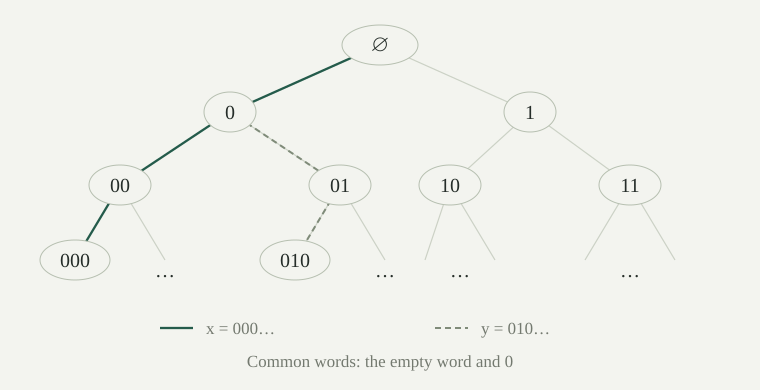

Write \([\mathbb N]^\omega\) for the family of infinite subsets of \(\mathbb N=\{0,1,2,\ldots\}\). Two infinite subsets are almost disjoint when their intersection is finite. A family \(\mathcal A\subseteq[\mathbb N]^\omega\) is almost disjoint if \(A\cap B\) is finite whenever \(A,B\in\mathcal A\) are distinct.
Both qualifications matter: every member is infinite, and only distinct members must have finite intersection. A set has infinite intersection with itself. For example, the even and odd numbers form an almost disjoint family with two members; their intersection is actually empty.
The constructions and countable-family arguments below work without the axiom of choice. We assume choice explicitly when producing maximal extensions.
Every family of pairwise disjoint nonempty subsets of \(\mathbb N\) is countable.
Proof
Send each member \(A\) to its least element. Distinct members cannot have the same least element, since they are disjoint. This is an injection into \(\mathbb N\), including for the empty family. □
Allowing finite intersections removes this restriction. The same natural number may then belong to many members, so least elements no longer distinguish them.
A binary sequence is a function \(x:\mathbb N\to\{0,1\}\). Its prefix \(x\mathbin{\upharpoonright}n\) is the finite word \((x(0),\ldots,x(n-1))\) of length \(n\); length zero gives the empty word. Each prefix extends all the shorter prefixes of the same sequence. Encode a word \(w=(w_0,\ldots,w_{n-1})\) by
This is the binary-word encoding. Its value lies in \([2^n,2^{n+1})\), so it determines the length. Within that interval the binary digits determine the word. Thus \(c\) is injective across all finite binary words.
Associate to \(x\) the subset
Different lengths give different codes, so \(A_x\) is infinite. Every \(A_x\) contains \(1\), the code of the empty word. For instance, the constantly zero sequence gives \(\{1,2,4,8,\ldots\}\).
The family \(\mathcal A=\{A_x:x\in\{0,1\}^{\mathbb N}\}\) is almost disjoint and has cardinality \(\mathfrak c=|\mathcal P(\mathbb N)|\), the cardinality of the real numbers.
Proof
Every \(A_x\) is infinite by . For distinct sequences \(x,y\), let \(k\) be the least index where they differ. Their prefixes agree exactly at lengths \(n\le k\). At every greater length, the differing coordinate \(k\) remains present. Injectivity of the code therefore gives
This intersection has exactly \(k+1\) elements. In particular it is finite, and \(A_x\ne A_y\), since equality would make the intersection infinite. Thus \(x\mapsto A_x\) is a bijection from the binary sequences onto \(\mathcal A\).
Characteristic functions identify binary sequences with subsets of \(\mathbb N\), and this cardinal is the continuum. Hence \(|\mathcal A|=\mathfrak c\). No family of subsets of \(\mathbb N\) can have a larger cardinality, since its inclusion in \(\mathcal P(\mathbb N)\) is an injection. □

What is the intersection for the constantly zero and constantly one sequences? What if \(x=(0,0,0,\ldots)\) and \(y=(0,1,0,0,\ldots)\), which differ at only one coordinate?
The constant sequences differ first at index zero, so only the empty prefix is common: \(A_x\cap A_y=\{1\}\). In the second example the first differing index is one, giving the empty prefix and the word \((0)\), with codes \(1\) and \(2\). The intersection is \(\{1,2\}\). Agreement at later coordinates does not erase an earlier difference from a prefix.
An almost disjoint family \(\mathcal A\) is maximal almost disjoint if no strictly larger almost disjoint family contains it. Equivalently, for every infinite \(B\subseteq\mathbb N\), some \(A\in\mathcal A\) has \(A\cap B\) infinite.
To check the equivalence, if every intersection with \(B\) is finite, then \(B\notin\mathcal A\) and it can be added. Conversely, any new member of a proper almost disjoint extension would have finite intersection with every original member, contradicting this condition. If \(B\) already belongs to \(\mathcal A\), it witnesses the condition with \(A=B\).
We allow finite maximal almost disjoint families. When discussing an infinite maximal almost disjoint family, we will say so explicitly.
Are \(\{\mathbb N\}\) and the two-member family of even and odd numbers maximal almost disjoint?
Yes. Every infinite \(B\subseteq\mathbb N\) has infinite intersection with \(\mathbb N\). For the even–odd family, if both intersections were finite, their union \(B\) would be finite. More generally, any finite partition of \(\mathbb N\) into infinite pieces is a maximal almost disjoint family. Thus a claim that “no countable almost disjoint family is maximal” would be false; the correct hypothesis is countably infinite.
Every countably infinite almost disjoint family \(\mathcal A\subseteq[\mathbb N]^\omega\) has an infinite set \(B\) almost disjoint from every member. Consequently \(\mathcal A\) is not maximal.
Proof
List the distinct members as \(A_0,A_1,\ldots\), without repetitions, and put
Each \(C_n\) is infinite. Indeed, the intersections of \(A_{n+1}\) with the finitely many sets \(A_i\), \(i\le n\), are finite. Removing their union from infinite \(A_{n+1}\) leaves an infinite subset of \(C_n\). Distinctness of the list is essential for this argument.
The sets \(C_n\) are decreasing, so every nonempty finite intersection is the member with the largest index and is infinite. The empty intersection is \(\mathbb N\). They therefore have the strong finite intersection property. The countable pseudointersection theorem supplies an infinite \(B\) with \(B\subseteq^*C_n\) for every \(n\).
For each \(i\), the inclusion \(A_i\subseteq\mathbb N\setminus C_i\) gives \(B\cap A_i\subseteq B\setminus C_i\), which is finite. Also \(B\ne A_i\), since otherwise that intersection would be infinite. Thus \(\mathcal A\cup\{B\}\) is a proper almost disjoint extension. □
This proof uses no choice. In particular, an infinite maximal almost disjoint family, if supplied, must be uncountable.
Assuming the axiom of choice, every almost disjoint family \(\mathcal A_0\subseteq[\mathbb N]^\omega\) is contained in a maximal almost disjoint family.
Proof
Let \(\mathcal Q\) be the set of all almost disjoint families containing \(\mathcal A_0\), ordered by inclusion. It is a subset of \(\mathcal P(\mathcal P(\mathbb N))\), so it is a set, and it is nonempty because \(\mathcal A_0\in\mathcal Q\).
For a nonempty chain \(\mathcal C\subseteq\mathcal Q\), take its union \(\mathcal M=\bigcup\mathcal C\). Every member of \(\mathcal M\) is infinite. If distinct \(A,B\in\mathcal M\) lie in two families of the chain, the larger family contains both and makes their intersection finite. Thus \(\mathcal M\) is almost disjoint, contains \(\mathcal A_0\), and is an upper bound. The empty chain has \(\mathcal A_0\) as an upper bound.
Zorn’s lemma gives a maximal member of \(\mathcal Q\). Any proper almost disjoint extension would still contain \(\mathcal A_0\) and belong to \(\mathcal Q\), contradicting this maximality. Hence it is maximal among all almost disjoint families. □
The choice assumption enters through Zorn’s lemma. The proof establishes existence; it does not specify a unique extension.
Assuming choice, there is a maximal almost disjoint family of cardinality \(\mathfrak c\).
Proof
Extend the family from by . The extension has at least \(\mathfrak c\) members because it contains that family, and at most \(\mathfrak c\) because it is a subfamily of \(\mathcal P(\mathbb N)\). Cantor–Schröder–Bernstein gives equality. □
This constructs one size of maximal family. It does not assert that all infinite maximal almost disjoint families have that size.
Can there be a greatest almost disjoint family under inclusion?
No. A greatest family would contain both the almost disjoint family \(\{\mathbb N\}\) and the one-member family consisting of the even numbers. It would then contain two distinct infinite sets with infinite intersection. The two maximal examples \(\{\mathbb N\}\) and the even–odd family also show that different maximal families need not contain each other.